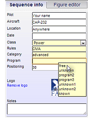
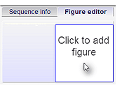
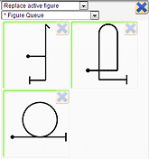
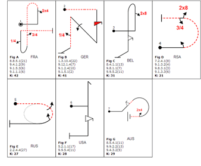

The OpenAero Manual |
|||||
GeneralOpenAero is aerobatic sequence design software available from OpenAero.net that runs inside your web browser. This makes it available on practically any computer, tablet and even Smartphone. For the best experience the Google Chrome web browser is recommended, and currently Mozilla Firefox also works well. Other web browsers may offer sufficient W3C standards compatibility to function correctly, but not all. It is useful to set the full-screen browser mode (usually by pressing F11 on your keyboard) to have the maximum screen space available when using OpenAero. The latest version of the software is always presented when you are online, and will be installed automatically. Once you have visted openaero.net your current version of the software will also be available to you when you are offline. For small tablets and Smartphones it will help to click View ... Mobile version and the layout will be adjusted to fit the narrower screen format. As of OpenAero 1.4.0 a Chrome App for desktop is also available. This provides:
Even though no other software besides OpenAero is necessary to produce complete and valid aerobatic sequences, the ready availability of an official and current copy of the relevant power or glider Aresti catalog is recommended for checking. This manual is intended for users of OpenAero. If you are interested in development of additions to OpenAero, including (National) rules, please refer to the developers wiki page. |
|||||
Creating sequencesAerobatic sequences can be created within OpenAero in either of two ways:
The descriptions here refer to using the Figure Editor. For the correct codes when using the text line above the sequence area please refer to OpenAero language Help. |
 |
||||
Beginning a sequenceAlways start by filling in the Sequence Info panel. The Rules, Category and Program information will be used for determining sequence validity. In the Sequence menu you can choose to start the sequence down-wind or cross-box. This can always be changed at a later stage. |
|||||
Adding a figureGo to the Figure editor tab and click on the Click to add figure box. A figure chooser will appear from which you can choose a group (for example 1.2 Two Lines) and then a specific base figure. At any point in a figure where the attitude must change from erect to inverted (or the reverse) a half-roll is shown and will be incorporated when the figure is inserted; this is easily changed for an alternate roll using the controls. If there are existing figures select the option to tell OpenAero where the new figure should be placed. Figures that are eligible to be placed in the current position (i.e. with the correct entry and/or exit attitude) are marked by a green line around the top and left sides of their images. When there are Sequence rules active that prohibit the use of certain base figures, those figures will not be shown. It is possible to show these figures (with a red border) by unselecting Hide illegal figs. When a figure is added or selected it becomes active and is drawn in magenta in the sequence area. The Form-B table is always updated to display all the Aresti element codes and K-factors. Base figures and elements that are not 'legal' according to the rules in effect are shown in that table with zero K. The current figure is also shown in the figure editing area where you can:
Some of these options are not available for figures that have a Free Unknown letter to avoid changing Free Unknown figures. When you have finished editing the figure click in an adjacent space to deactivate it, then you can add a new figure at the end of the sequence or optionally at the beginning. If a figure is highlighted when you click to add a figure then it will be opened again for editing. |
|
||||
Figure commentsThe comment section can be used to enter information about the figure. Plain text can be used but there is also a variety of useful special codes:
|
|||||
Automated handling of Free and Compulsory / Free Unknown sequence figuresWhen on the Sequence Info panel a combination of Class : Rules : Category : Program is set that requires special handling to meet CIVA regulations, the software will provide the following automated handling: Glider Advanced and Unlimited
Power and Glider Advanced and Unlimited
|
|||||
Selecting and moving a figureTo select a figure, click on it or select it in the sequence text line. The figure is now magenta and can be edited with the figure editor. For repositioning it can be dragged anywhere by holding down the mouse button after clicking the figure. Note: this can not be done for figure 1. After moving a figure it's possible to change the curved line to a straight line by clicking the Straight line button in the Figure editor. It's also possible to remove the line, but for clarity only for horizontal moves. This can be done by clicking the Move figure forward button. TIP : A poorly laid-out sequence that is difficult to follow can be a real problem for judges - time spent creating an easily understood flow of figures can be a good way to help improve your marks. Make sure to use the straight and curved dotted lines to show how your figures follow each other. |
|||||
Using the OpenAero 'Queue'The queue system provides a way to copy selected figures to a temporary list, from which they may conveniently be selected for insertion at other positions in the sequence. This enables the figures in any sequence to be re-ordered to improve the sequence design, though you must take care of erect or inverted entry conditions and continue / reverse / change axis effects. The queue and its figures can also be saved to disk for later re-use - when re-opened they are accessible through the "* Figure Queue" item at the top of the figure / family selection drop-list. The background of queue figures will be grey when the figure is already present in the sequence. All figures in a sequence can be added to the queue at once by clicking Add all to queue. All figures can be removed from the queue with Clear queue. |
 | ||||
Keeping the figures separateWhen figures are overlapping they can be dragged to a new position. It is also possible to use Separate figures from the Sequence menu to separate all figures from each other. OpenAero can also position new and updated figures clear of previous and subsequent figures automatically. To activate this, go to General Settings and select the option Automatically position new/changed figures clear of others. To remove all current sequence formatting choose Clear positioning from the Sequence menu. |
|||||
Checking sequences against the selected RulesChoose Sequence ... Check sequence and your sequence will be checked against the rules that you have selected in the Sequence Info setup. Note that any construction errors are shown in the Alerts box below the figure editor. If you print the sequence you can opt to add the Sequence Check Result to the bottom of your Form B, C, R or L. Several sequences can be checked simultaneously by choosing and/or dragging their files to the box shown when you click menu item Tools ... Check multiple seq. When creating a Free Unknown sequence, it is possible to use the original submitted figures to check if they are correct in your sequence. To do this, click Reference sequence in the Sequence info tab. A dialog will show where you can enter a sequence string for a reference sequence. This string can for example be copied from the main sequence text area when you have the original submitted figures opened in OpenAero. Floating Point correctionIn some sequence types, a Floating Point correction is allowed. This means that one or more K points may be deducted from the figures with the highest K factors if this is necessary to reduce total sequence K to the maximum allowed. The Floating Point correction is automatically applied when corresponding rules are set in the Sequence Info. |
|||||
Creating a Known Free sequenceAs of 2016, CIVA has replaced the Known and Free sequences with the Known Free. The following method is recommended for creating Known Free sequences with OpenAero:
|
|||||
The Free Unknown designerThis is the most efficient way to design a Free Unknown sequence from a list of submitted Unknown figures. It can be found under the Tools menu. Because of required screen size it is not available in the mobile layout.Getting startedOpen a sequence file containing the Free Unknown figures from the File menu, or by clicking a link holding the sequence that has been provided to you. If the sequence is correctly formatted (correct rules, all figure letters assigned, no other figures) OpenAero should automatically start the Free Unknown designer.Otherwise, you can start it from the Tools menu. If OpenAero detects it is just a figures file you will start with an empty sequence. Otherwise, the current sequence will be shown. Sequence layoutThe purpose of the designer is to quickly create a sequence. For
this reason, layout is schematic and fully automated. There are no
options for changing this. When the sequence is complete, click the Finalize sequence & exit Free Unknown Designer button to change the layout of the sequence. Adding and changing figures in a subsequenceAll submitted Free Unknown figures are visible on the lefthand
Figures tab. They can be dragged and dropped into a
subsequence and will be placed before the figure over which they
are dropped. To create a new subsequence, drag the figure to
New / copy subsequence. To remove a figure, click the cross in the righthand upper corner. Linking figures can be added by dropping the 'LINK' block. After
this has been done the linking figure can be changed after
selecting it by clicking. Manipulating subsequencesThe entry direction of each subsequence can be chosen by selecting the first figure of it and setting Sub sequence entry direction.Subsequences can be dragged as a whole into another subsequence. The whole subsequence will then be inserted before the figure over which it is dragged. Dragging a subsequence to New /copy subsequence will create a copy of the subsequence. Finalizing the sequenceWhen the sequence is complete, with all submitted figures and required links, it can be finalized by clicking Finalize sequence & exit Free Unknown Designer. Any errors will be reported. You will then be returned to the regular sequence editor where you can adjust layout. |
|||||
Opening, Saving and Printing sequencesOpening sequencesTo open an existing sequence, choose Open sequence in the File menu
and navigate to locate and open the required sequence file. Sequence
files always end in ".seq" and may have been created either with
OpenAero or originally in OLAN. Saving sequencesTo save the current sequence as a "filename.seq" file, choose Save sequence in the File menu. Depending on how you have set your browser, your computer will ask for a file name to save the sequence; in Chrome be sure to use the '≡' Customize and control button in the header area, then click the Settings item so that you can tick "Ask where to save each file before downloading" on the Advanced Settings page. Always be sure to give the sequence a file name ending in ".seq" - these files can subsequently be opened only by OpenAero and not by OLAN. To create a link that holds your complete sequence, choose Save as link in the File menu. It is useful to right-click here and choose "Copy Link Address" to transfer this link to your computer's clipboard. Saving or Printing sequencesTo save or print some or all of the sequence forms, choose Print/save forms in the File menu, and select the appropriate options. To save the forms as a PDF file in Windows you will need some software that does this for you, such as PDFcreator or PDF reDirect v2. In a Mac OSX or Linux machine you can simply choose to 'print to PDF'. You can also save one or multiple forms as as image. Two formats are available:
iPad/iPhone: Only Save PNG image is available. In Safari, you can then tap the button to save or print the image. Printing multiple sequencesMultiple sequences can be printed without opening each sequence separately. This option can be found in the Tools menu.This is especially usefull for contest organisers. Saving a sequence's figures as separate imagesTo save the current sequence figures as separate images, choose
Save figs separate in the File menu. You will then get
the option to save a ZIP file that
contains every figure of your sequence as a separate image. The image naming pattern can be set in Settings in the Tools menu. |
|||||
The Figure Grid system for Unknown and Free Unknown operations Either from the very start or from an existing sequence, View ... Figs in Grid will set each figure into a tabular grid format showing the K-factors and any other relevant information. Use Tools ... Settings to change the number of grid columns if required. This grid can be printed for distribution to sequence designers bearing all the relevant figure information, so that submitted sequences conform to CIVA regulations.
It may be useful to add the submitting Team name or IOC country code
to the figure comments. This can also be done by typing it
between inverted marks into the sequence string after any Free Unknown
identification letter "@A", "@B" etc. and before the figure code -
for example "@F USA". This will be shown in the grid
adjacent to the figure designation if present,
or the first Aresti manoeuvre code if not. |
|||||
Importing OpenAero files into ACROOpenAero files that are stored in "filename.seq" format can be directly imported into the ACRO scoring software, thus providing a swift and accurate method for transferring all of the required figure information. Note that the OpenAero figure text string does not provide the necessary data for this procedure, and should generally be avoided if possible. |
|||||
SettingsThe Settings dialog offers options for changing the look & feel of OpenAero. There are three tabs:
Please keep in mind that when somebody opens your sequence on another system it will look different from your version if you change some of the styling values! |
|||||